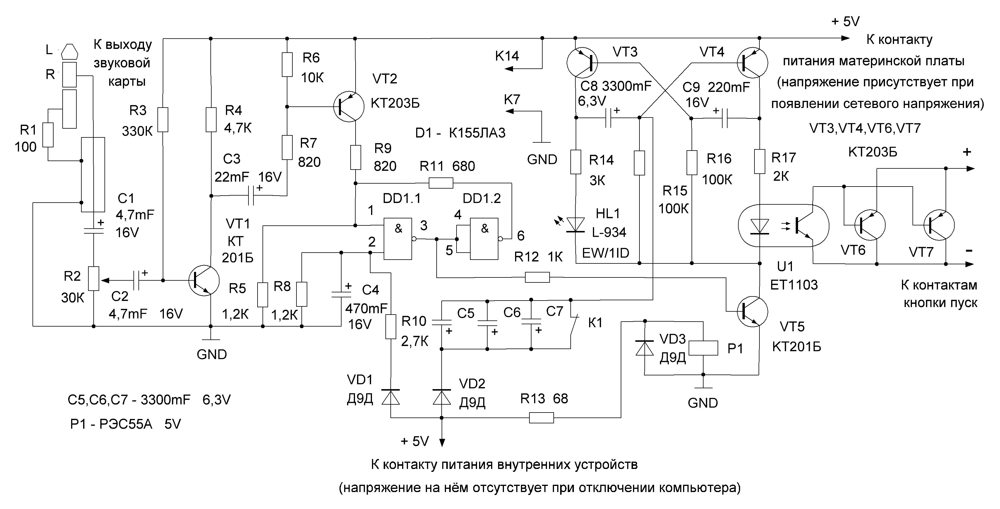
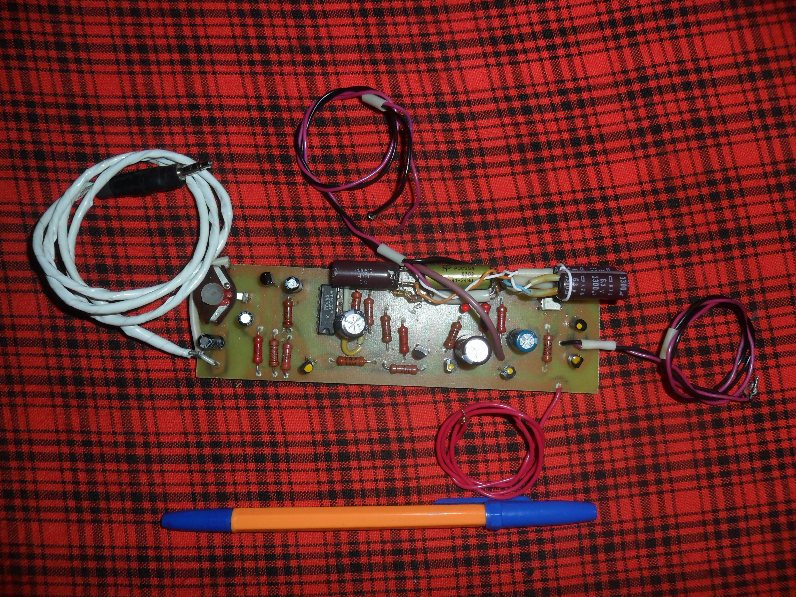

Усовершенствованное устройство включения компьютера отличается от предыдущего более простого варианта устройства тем, что производит многократные попытки включения до успешного запуска операционной системы.
Как и ранее представленное устройство предназначено оно для включения, без участия человека, удаленного, стационарного компьютера выключенного в результате проблем с электропитанием. Иногда после появления сетевого напряжения компьютер самостоятельно включается, но не происходит удачного запуска операционной системы. Предлагаемое устройство будет включать и выключать компьютер с периодичностью 3-4 минуты, до тех пор пока на его вход не поступит сигнал мелодии приветствия запуска системы со звуковой карты, который подтверждает успешное включение компьютера.
Включение компьютера данным устройством производиться по следующему принципу. Во время появления сетевого напряжения электропитания на выходе блока питания компьютера появляется напряжение +5В поступающее на материнскую плату, от него производиться основное электропитание устройства при этом на обоих входах 1, 2 логического элемента DD1.1 уровни напряжений соответствуют значению логических нолей, следовательно на его выходе 3 присутствует напряжение обеспечивающее открытие транзистора VT5 подающего напряжение питания на мультивибратор собранный на транзисторах VT3,VT4. Транзистор VT4 открыт, при этом конденсатор C9 заряжается примерно 15 секунд, обеспечивая закрытое состояние транзистора VT3, светодиод HL1 подключенный к коллектору транзистора VT3 через резистор R14 светит в половину яркости. На оптрон U1 подано напряжение обеспечивающее полное открытие его фототранзистора и подключенных к нему двух параллельно соединённых транзисторов VT6,VT7 производящих включение компьютера замыкая цепь кнопки пуск на время зарядки конденсатора C9. После чего транзистор VT4 закрывается на время зарядки конденсатора C8, составляющее 3-4 минуты, транзистор VT3 при этом открыт и светодиод HL1 светит в полную яркость.
Если компьютер включается, появляется напряжение питания внутренних устройств. Катушка реле P1 оказывается под напряжением, его нормально замкнутые контакты K1 размыкаются, происходит зарядка конденсаторов C5,C6,C7 через диод VD2 подключенных к базе транзистора VT4 обеспечивая его закрытие на время их зарядки примерно 4 минут, для полноценного включения компьютера с запуском системы и срабатыванием мелодии приветствия. При этом на вход 2 логического элемента DD1.1 через диод VD1 и резистор R10 подано напряжение соответствующего логической единице. Когда операционная система запустится на вход усиливающего сигнал транзистора VT1 от звуковой карты поступит сигнал приветствия, импульс от которого через конденсатор C3 и резистор R7 кратковременно откроет транзистор VT2 обеспечивая подачу логической единицы на вход 1 логического элемента DD1.1, на выходе которого уже будет отсутствие напряжение, транзистор VT5 закрывается отключая мультивибратор, светодиод гаснет HL1, при этом с выхода 6 логического элемента DD1.2 через резистор R11 подана логическая единица на вход 1 логического элемента DD1.1, что способствует нахождению логических элементов в таком состоянии до отключения компьютера.
Когда компьютер отключается напряжение на входе 2 логического элемента DD1.1 пропадает, происходит сброс логической схемы в исходное состояние через резисторы R5,R8 соединяющие входы 1, 2 логического элемента DD1.1 с отрицательным полюсом схемы, отсутствие напряжения на катушке реле P1 приводит к замыканию нормально замкнутых контактов K1 разряжая конденсаторы C5,C6,C7. Если компьютер включился и операционная система не запустилась на вход пред усилителя не поступил сигнал мелодии приветствия и на входе 1 логического элемента DD1.1 отсутствует напряжение логической единицы переводящего к устойчивому переключению логических элементов и отключению мультивибратора, после полного разряжения конденсаторов C5,C6,C7 происходит открытие транзистора VT4 подающего напряжение на оптрон U1 производящего открытие транзисторов VT6,VT7 замыкая цепь кнопки пуск для отключения компьютера, а затем повторяется очередная попытка включения. Применение мультивибратора в схеме необходимо для возможности многократного включения, поскольку компьютер не всегда включается с первого раза.
Переменный резистор R2 нужен для подстройки уровня сигнала от звуковой карты, конденсатор C4 создаёт задержку появления напряжения на входе 1 логического элемента DD1.1 для того чтобы в момент включения импульсы щелчка включения создающего кратковременное появление напряжения на входе не приводили к преждевременному переключению. Провод соединяющий устройство с выходом звуковой карты экранирован.
Перед включением штекера в гнездо звуковой карты либо акустических систем необходимо убедиться в том, что общий провод аудиоустройства имеет непосредственное соединение с общим отрицательным проводом питания компьютера, чтобы не вывести их строя, поэтому же в разрыв общего провода включен резистор R1.
Автор: Александр Кузнецов